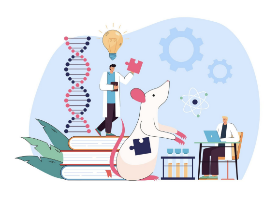
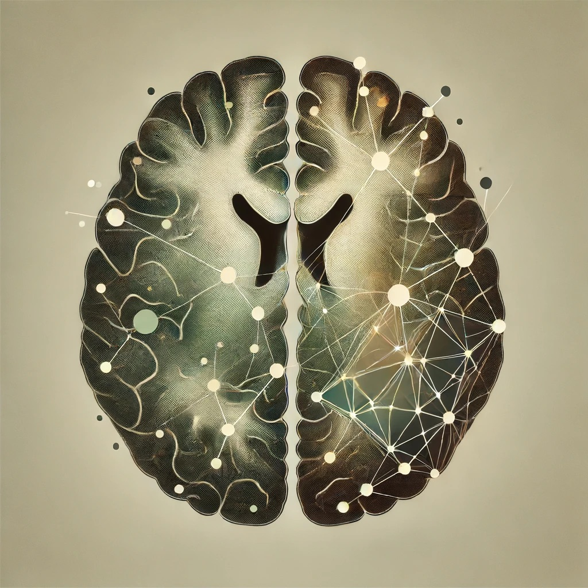
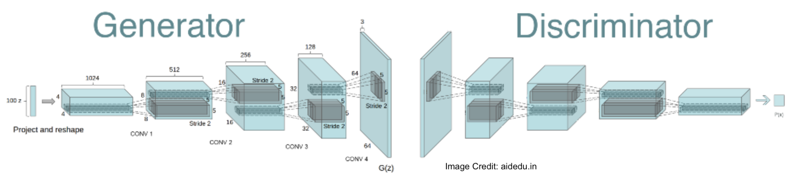

Projects
My world of AI/ML
Official Projects
Visualisation of Gene Clustering and Analysis
Specialized Machine Learning techniques, that aims to analyze and cluster genes associated with microglial responses, shedding light on the mechanisms underlying tissue repair and inflammation of Microglial Homeostasis Stab Injury Model
Detection of Gliomas Using Deep Learning
Predictive model to determine the developmental stage of Glioma tumors utilizing AI/ML techniques on clinical data
ArtAe Model Mark1
Detecting the Exoplanets Using Deep Learning

EngGene Mark1
An Artificial Intelligence Model to diagnose Genetic Disorders

Personal Projects
Natural Language Classifier Model
Designed a NLP model capable of classifying text data with good accuracy. This model successfully reads through the input and classifies the input based on the sentiments (negative or positive sentiment) in accordance with the dataset.
Deep Generative Adversarial Networks Model
This project involved developing and implementing a GAN model to generate synthetic data that closely mimics real-world data patterns. I have been successful in generating new images through test and train data.
Image-based Detection of Alzheimer’s from MRI Scan using Deep Learning Model
Developed a study model for predicting the presence of Alzheimer’s in patients using AI/ML with image analysis. I am implementing Convolutional Neural Network to predict the development of Alzheimer’s in patients by analyzing the MRI Scans. The model effectively detects the presence of Alzheimer’s with a remarkable accuracy of 98.16%.